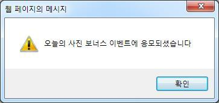
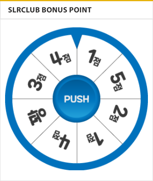

SLR클럽 회원 승급을 위해서는 회원 점수(이하 포인트)가 필요합니다. 포인트는 로그인, 게시글 및 댓글 작성 등을 통해 획득할 수 있습니다. SLR클럽에서 획득할 수 있는 포인트의 종류와 참고사항 등을 알려드립니다.
포인트의 종류
SLR클럽에서는 다양한 방법으로 포인트를 획득하실 수 있습니다. 종류별 획득 가능 포인트는 다음과 같으며 하루에 획득할 수 있는 포인트에는 제한이 있습니다. 예를 들어, 게시글을 여러 개 작성하신다 하더라도, 포인트를 무한정 획득할 수 있는 것은 아닙니다. 아래의 표와 주의사항을 살펴보시기 바랍니다.
| 포인트 종류 |
기본 포인트 |
일일 획득 포인트 제한 |
비고 |
| 로그인 |
1점 |
1점 |
자동로그인 인정 안함 |
| 게시글 작성 (일반 게시판) |
5점 |
10점 |
게시글 2개까지 인정 |
| 게시글 작성 (갤러리) |
5점 |
10점 |
게시글 2개까지 인정 |
| 게시글 작성 (사용기, 강좌) |
10점 |
10점 |
게시글 1개까지 인정 |
| 댓글 작성 |
1점 |
5점 |
댓글 5개까지 인정 |
| 갤러리 추천 |
1점 |
4점 |
갤러리 추천 이벤트 참고 |
| 플래시 게임 참여 |
꽝 ~ 5점 |
꽝 ~ 5점 |
운에 따라 다름 ㄷㄷㄷㄷ |
| 하루 최대 획득 가능 포인트 |
40점 |
포인트 감점 규칙
부정이용 및 관리규정 위반으로 인해 회원 포인트가 시스템에서 자동으로 감점되거나 운영팀에 의해 수동으로 감점조치될 수 있습니다. 포인트 감점 규칙은 다음과 같습니다.
| 종류 |
사유 |
감점 포인트 |
| 시스템 자동 감점 |
본인 작성 게시글/댓글의 삭제 |
-1점 ~ -10점 |
| 규정위반 게시글 삭제 |
-15점 |
| 부적합 게시글 이동 |
-10점 |
| 댓글 삭제 |
-5점 |
| 사용기, 강좌게시판 부적합 게시물 삭제 |
-30점 |
| 게시물 부정 신고 |
-50점 |
| 운영팀 수동 감점 |
주의 |
0점 |
| 경고 |
-50점 |
| 서비스이용제한 |
-100점 ~ -1,000점 |
포인트 관련 주의사항
SLR클럽에서는 승급을 위해 점수용 게시물을 다량으로 게시하여 포인트를 부정획득하는 것을 금지하고 있습니다. 이는 무분별한 게시글 작성으로 인해 다른 회원님들의 쾌적한 게시판 이용을 방해하지 않도록 하기 위함입니다. 또한 일부 게시판은 게시글이나 댓글 작성시에도 포인트가 지급되지 않으므로 아래를 참고하시기 바랍니다. 또한 포인트 관리 시스템이 통합관리형으로 변경되어, 포인트는 시스템에 의해 주기적으로 정산됩니다. 포인트에 관련된 주의사항을 알려드립니다.
| 게시판 분류 |
포인트 없음 |
포인트 있음 |
| COMMUNITY |
자유게시판
포토스트림
성인자유게시판 |
소모임
자료실
이슈토론방
SLR지식인 |
| FORUM |
친목게시판
신제품게시판 |
친목게시판과 신제품게시판을 제외한 게시판 |
| GALLERY |
시민기자단
갤러리 댓글 |
시민기자단을 제외한 전 갤러리
갤러리 추천 |
| INFORMATION |
자유사용기 |
유저사용기
포토에세이
강좌
출사정보 |
| MARKET |
회원장터(팝니다/삽니다/교환/구인구직)
직접홍보 |
시장정보
해외직구
장터보호
도난/분실신고 |
포인트 지급 규정
- 포인트 지급 예외
- 다음과 같은 경우에는 포인트가 지급되지 않습니다.
- 최소 길이 제한 : 모든 게시판에서 게시물 내용 64자 이하, 코멘트 내용 32자 이하인 경우
- 기간 제한 : 원글이 작성된지 7일 이상 지난 게시물에 댓글 작성시
- 갤러리 추천 포인트 이벤트
추천수가 70 이하인 작품/주제갤러리 게시물을 추천할 경우 1포인트가 지급됩니다(1일 최대 4포인트). 또한 추천한 사진이 오늘의 사진으로 등록될 경우 포인트가 추가 지급됩니다. 갤러리 추천 포인트 이벤트는 게시글을 추천하실 경우 자동으로 응모되며, 응모가 완료되면 이벤트 안내 팝업창이 자동으로 출력됩니다. 보너스 포인트는 1일 최대 2번 지급됩니다(1일 2개의 작품에 대한 추천만 인정합니다).

※ 추천 작품이 오늘의 사진으로 등록될 경우 추가 제공되는 포인트
- 01~20등으로 추천 : 3포인트 추가
- 21~40등으로 추천 : 2포인트 추가
- 41~70등으로 추천 : 1포인트 추가
- 71등 이상으로 추천 : 추가 포인트 없음
- 미니 게임을 통한 포인트 획득
SLR클럽 PC/모바일/앱에서 미니 게임을 통해 보너스 포인트를 획득하실 수 있습니다. SLR클럽 메인페이지 또는 회원랭킹페이지에서 미니 게임 'PUSH' 버튼을 누르시면, 랜덤으로 보너스 점수가 추가됩니다. 미니 게임은 하루에 1번 진행할 수 있습니다.

※ 미니 게임을 통한 보너스 포인트
- 미니 게임은 SLR클럽 메인페이지, 회원랭킹페이지에서 확인하실 수 있습니다.
- 하루에 한 번 참여하실 수 있습니다.
- 1~5 포인트가 랜덤으로 부여됩니다.
- '꽝'이 나오면 다음날 다시 도전해주세요! ㄷㄷㄷㄷ
- 포인트 관리/정산 규정
하루 최대 획득 가능 포인트는 40점입니다. 이는 매일 특정시간에 초기화되는 방식이 아니며, 현재 시간 기준으로 최근 24시간 내에 얻은 점수를 합한 총합에 제한이 적용됩니다. 포인트의 정산은 매일 오전 4시 30분을 기준으로 정산되며, 포인트 통합관리형 시스템을 도입하여 게시물등록점수, 댓글등록점수, 게임참여점수를 시스템에서 자동으로 관리합니다. 다만 각 회원의 점수변동이력이나 변동사유 등을 운영팀이 별도로 관리하지 않기 때문에, 상세내역을 확인할 수 없습니다. 이 점 참고하여주시기 바랍니다.
운영팀